BASED IN SACRAMENTO, CALIFORNIA · FREE ESTIMATE
Their five steps.Step one startshere.
Castillo Fencing publishes the five steps a fence job goes through, from the first conversation to the final walkthrough. This page is laid out along those five steps — and the first one, where they ask what you are building, you can answer before you call.
Step 01 · Initial Consultation — their words
“We’ll schedule a convenient time to discuss your fencing needs, preferences, and budget. We’ll listen carefully to your vision and assess your property.”
Six answers, and the first call starts from the fence.
Six materials, their own list and their own words. Pick one and the questions below narrow to the styles they offer in it.
Their contact form asks for your name, email, phone, address, city, zipcode and the type of fence. It does not ask how long the run is, how tall, how many gates, or whether something is coming out first. Answer that here and bring it with you.
Step 02 · Estimate
What they would write down, written down already.
“You’ll receive a clear, easy-to-understand estimate for your review and approval, ensuring complete transparency before any work begins.”
Your project, in plain English.
This is the text you take with you. Paste it into the “Project Info/Message” box on their own contact form, read it over the phone, or hand it over at the visit. Nothing is sent from this page.
Measurements are approximate and are confirmed on site.
Step 03 · Schedule Installation
Twenty-three towns, one crew, one map.
“With your approval secured and initial deposit, our project manager will contact you to coordinate the specific installation date, marking the beginning of your fence construction.”
Their own list, in their own order. The map is theirs too.
- Sacramento
- West Sacramento
- Citrus Heights
- Elk Grove
- Folsom
- Galt
- Isleton
- Rancho Cordova
- Granite Bay
- Loomis
- Winters
- Lincoln
- Roseville
- Woodland
- Davis
- Escalon
- Lathrop
- Lodi
- Manteca
- Mountain House
- Ripon
- Stockton
- Tracy
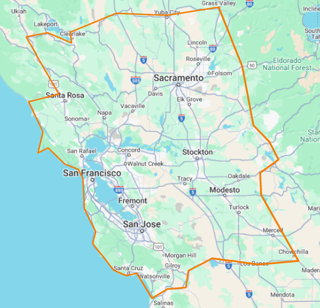
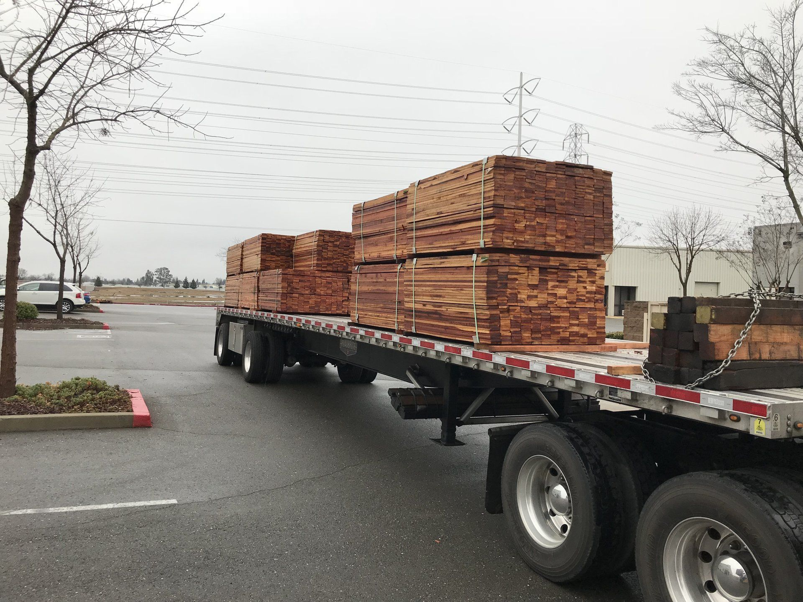
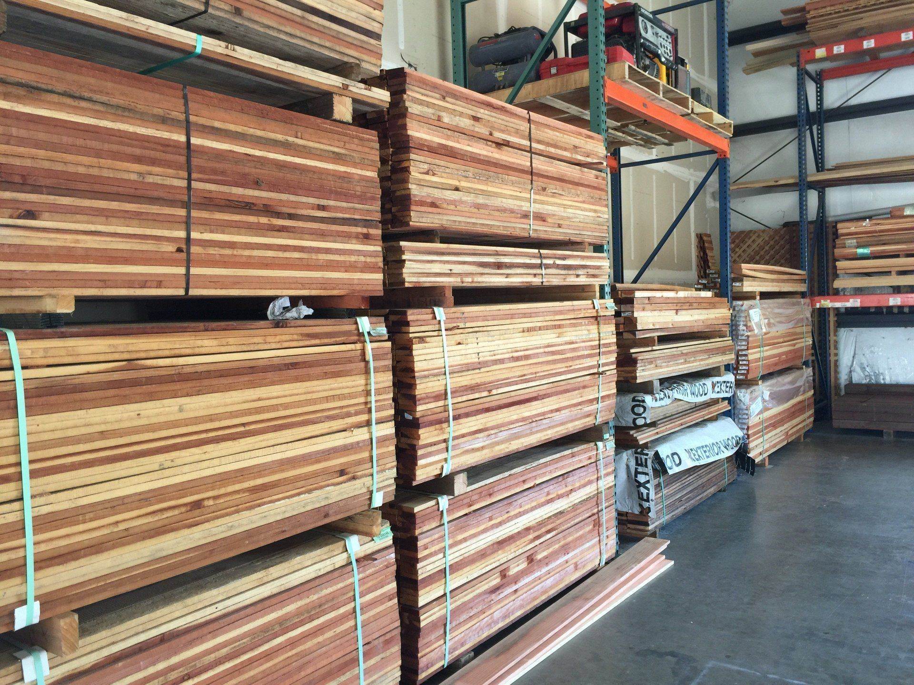
Step 04 · Construction Day
The work, in their own photographs.
“Our skilled craftsmen will meticulously manage the construction day to ensure a smooth and efficient process, as seamless project completion is our top priority.”
Nine of their own job photographs. None of them repeats a material card above.
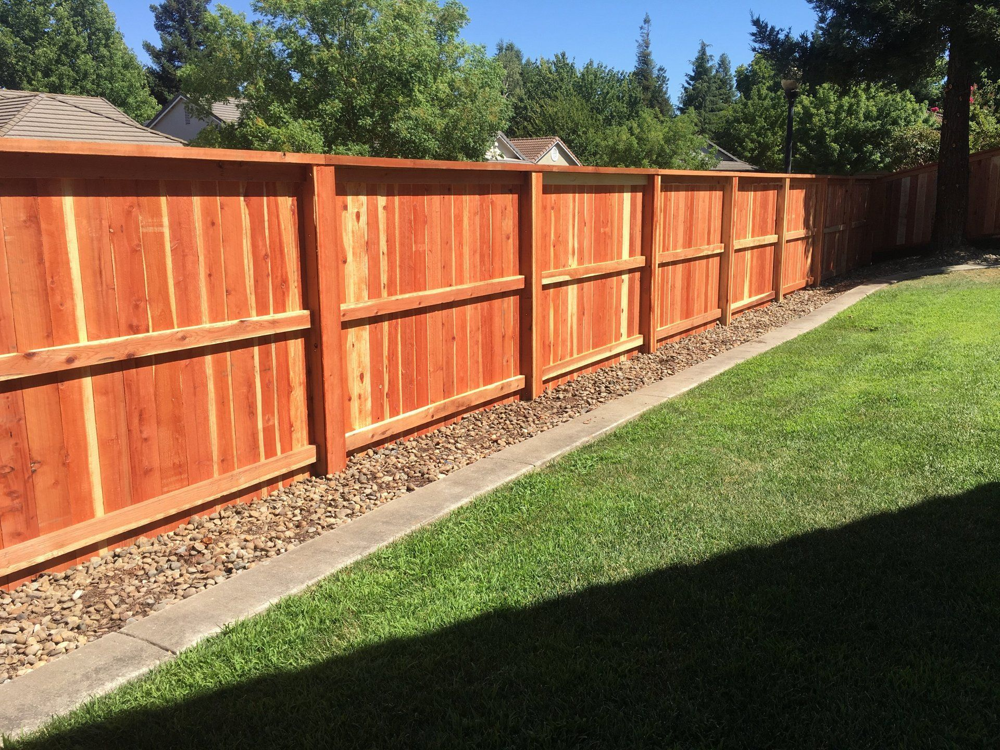
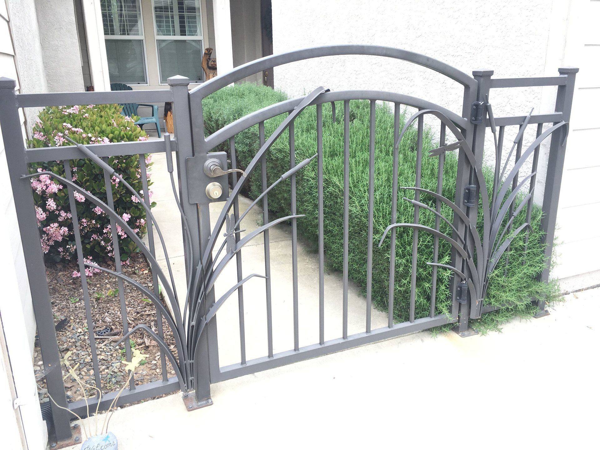
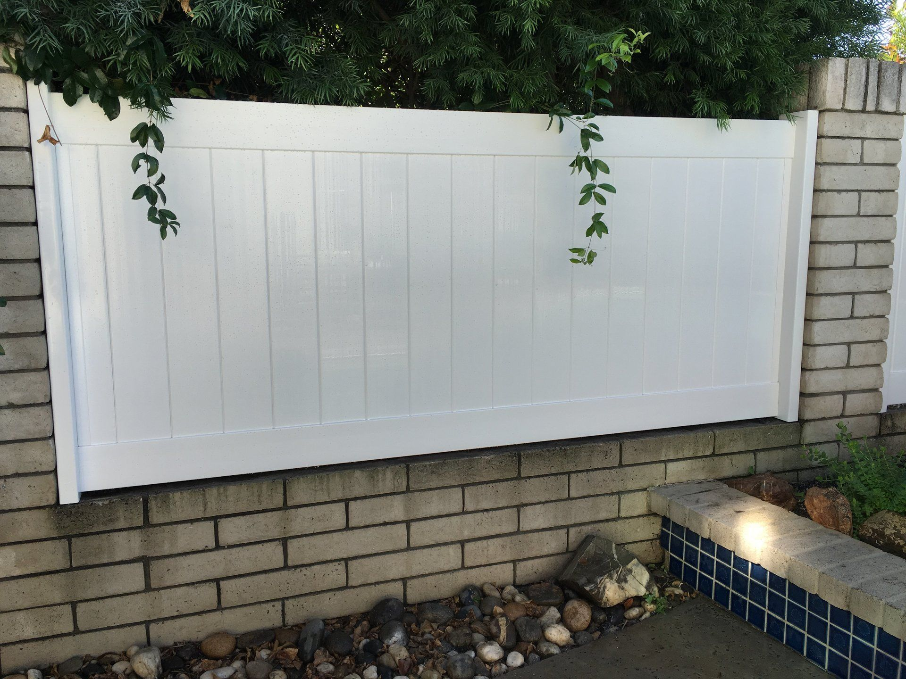
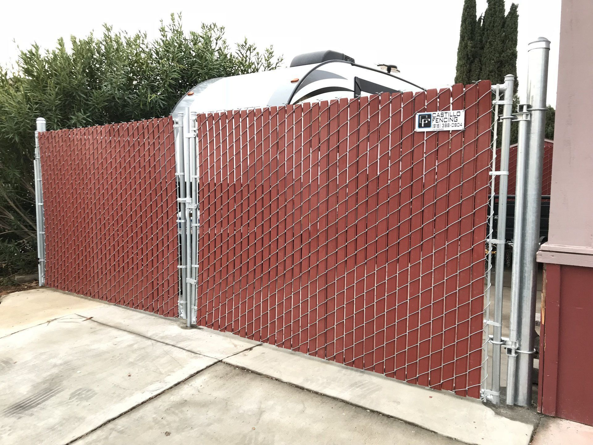
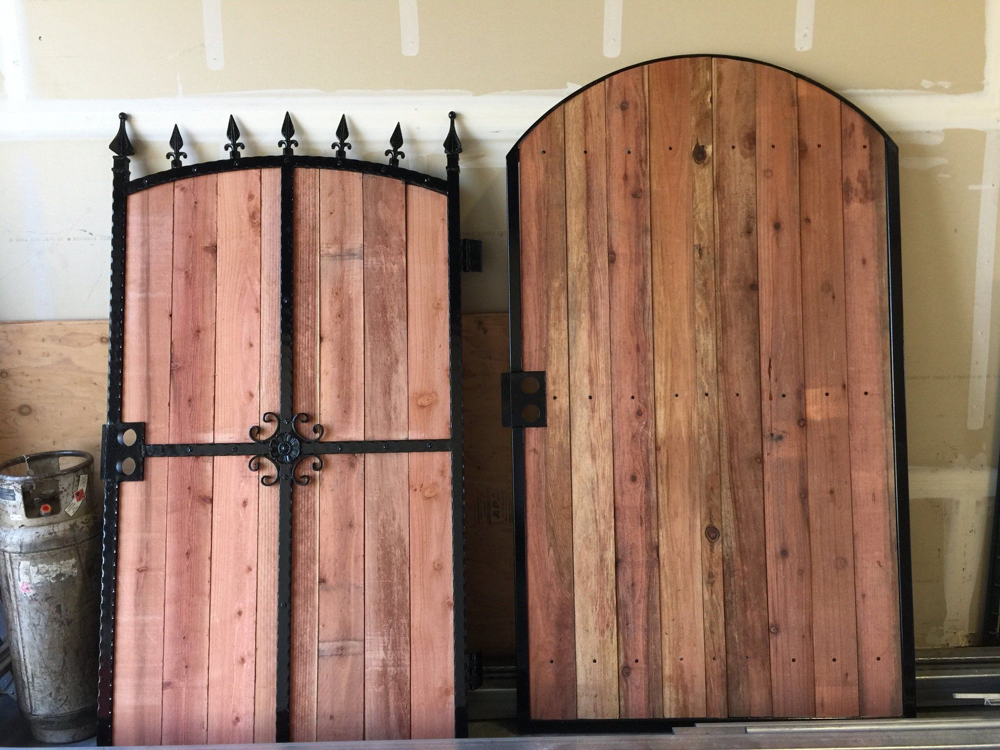
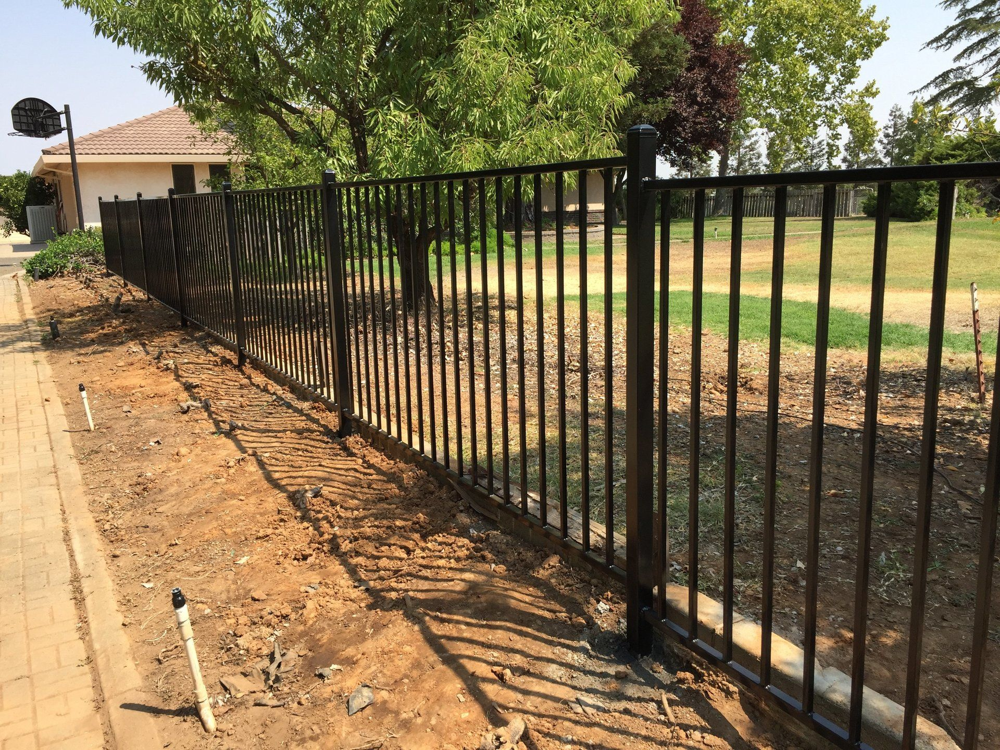
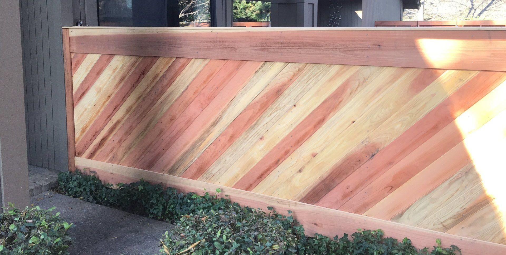
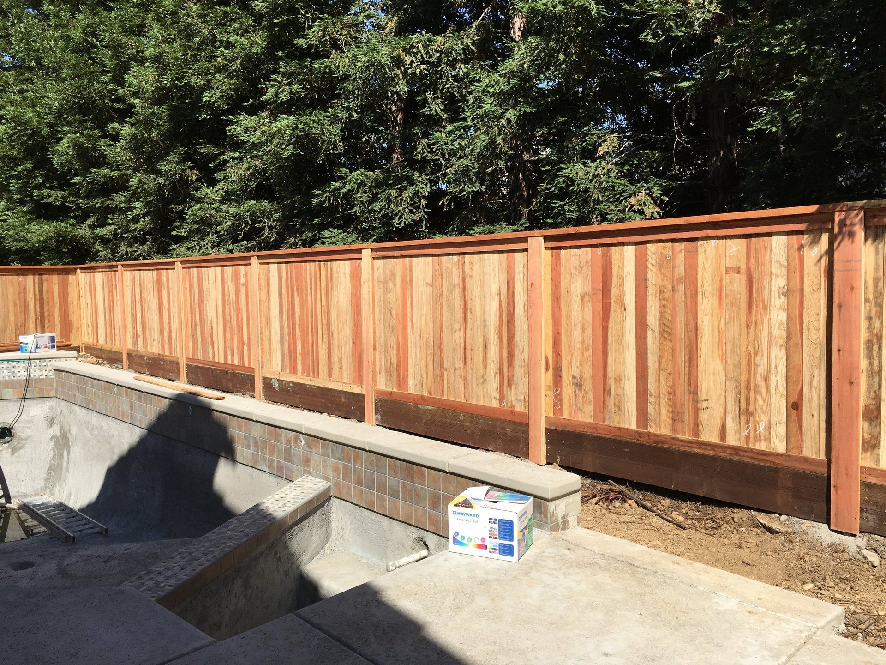
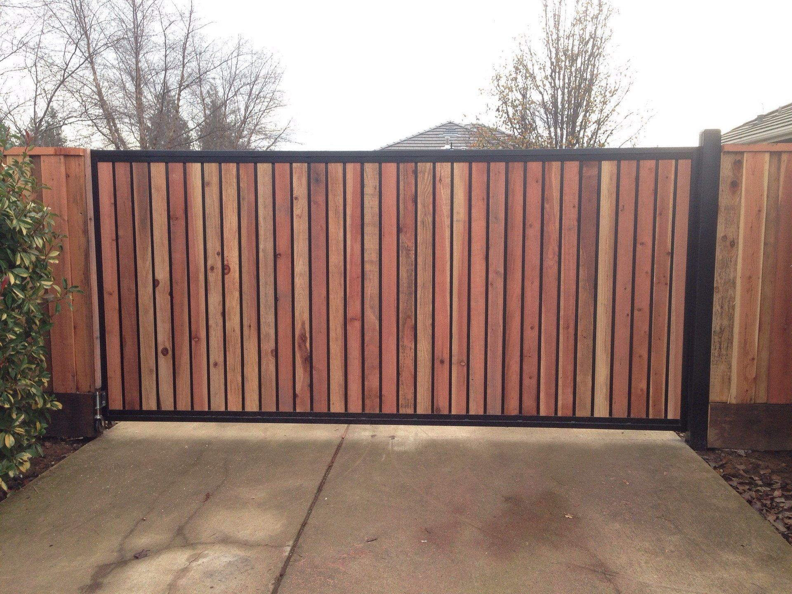
Step 05 · Ta-da!
The last word is theirs. So is the phone number.
“It’s time to enjoy your newly enhanced space. We will conduct a final walkthrough to ensure your complete satisfaction.”
Their own block, from their own homepage — a Google rating widget that sits 5 394 px down a 9 107 px page. Here it is at the top of the last step, where their process ends.
Good to know.
- Free estimate
- Their own line on the homepage: “Reach out to us today for a free estimate or to set up an appointment.” The contact page repeats it: “Get a free estimate from us by completing the form or calling us on our number below.”
- Residential and commercial
- They describe themselves as “Your Reliable Choice for Residential & Commercial Fencing in Sacramento”, and the services page opens on homes and businesses alike.
- A deposit before the date
- Step three of their own process: “With your approval secured and initial deposit, our project manager will contact you to coordinate the specific installation date.”
- A final walkthrough
- Step five of their own process: “We will conduct a final walkthrough to ensure your complete satisfaction.”
- Built for the local weather
- Their own reason for the materials they stock: “We source robust materials designed to withstand Sacramento’s warm summers and mild, occasionally wet winters.”
- A photo of the fence helps
- Their own form has an upload field labelled “Show Us Your Current Fence” with the note “Upload a picture of your current fence by clicking Upload File.” Worth having one ready.
Talking to them.
One phone number and one email, both theirs, both on every page of their site. The free estimate is their own offer: “Reach out to us today for a free estimate or to set up an appointment.”